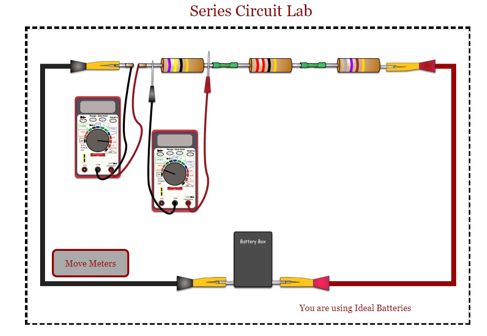
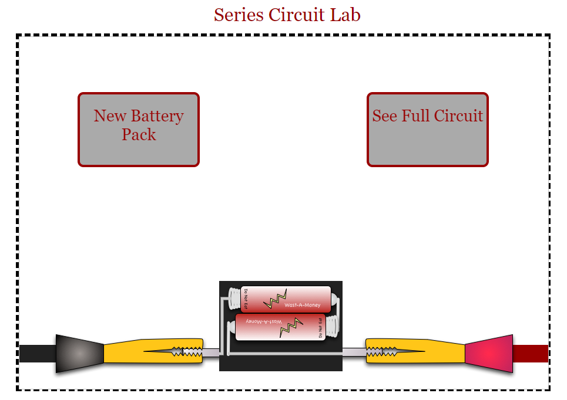
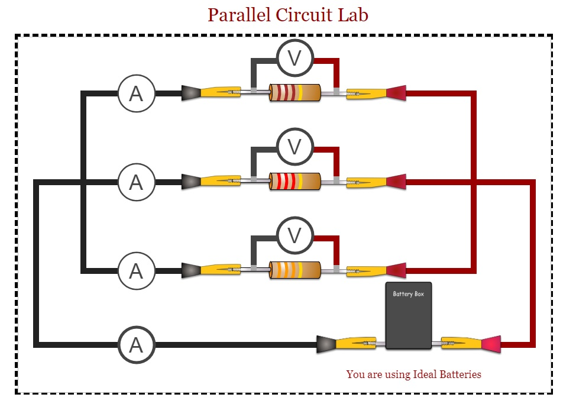

1. 다음 이미지에 표시된 "직렬 회로 실험실(Series Circuit Lab)" 시뮬레이션을 시작하세요.

2. 전압계(voltmeter)를 클릭하면 전압계가 연결된 회로 부분의 전압(전위차, electric potential difference)을 읽을 수 있습니다. 전압계를 다시 클릭하면 전체 회로로 돌아갑니다. 전압계를 회로의 다른 위치로 이동하려면 "미터 이동(move meters)" 버튼을 클릭하세요.
3. 다음 표에 나열된 위치에 전압계를 놓고 전압을 기록하세요.
| 전압계 위치 | 전압 (V) |
|---|---|
| 전지(battery) | |
| R1 | |
| R2 | |
| R3 |
4. 전지를 클릭하여 전압을 확인하세요. 각 전지의 전압은 1.5V입니다. 예를 들어, 팩에 전지가 4개 있으면 총 전압은 6.0V입니다.

5. 전지 양단의 전압과 각 저항기(resistor) 양단의 전압 사이의 관계를 찾아보세요.
6. 다음 질문에 답하세요: 전지 양단의 전압과 각 저항기 양단의 전압 사이에는 어떤 관계가 있나요?
1. 다음 이미지에 표시된 "병렬 회로 실험실(Parallel Circuit Lab)" 시뮬레이션을 시작하세요. 전압계를 클릭하면 전압계가 연결된 회로 부분의 전압을 읽을 수 있습니다.

2. 다음 표에 나열된 위치에서 전압계를 클릭하고 전압계의 전압을 기록하세요.
| 전압계 위치 | 전압 (V) |
|---|---|
| 전지 | |
| R1 | |
| R2 | |
| R3 |
3. 전지를 클릭하여 전압을 확인하세요. 각 전지의 전압은 1.5V입니다. 팩에 전지가 6개 있으면 총 전압은 9.0V입니다.
4. 다음 질문에 답하세요: 네 가지 다른 위치에서 전압에 대해 무엇을 알 수 있나요?